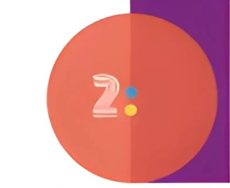

Sekolah zaman sekarang memang jauh berbeza dengan sekolah zaman batu kapur—eh silap, maksudnya zaman dulu. Kalau dulu cikgu mengajar guna kapur dan papan hitam, sekarang cikgu klik sahaja tetikus, terus keluar video pembelajaran interaktif. Dunia makin berubah, dan pendidikan pun tak boleh ketinggalan. Di sinilah munculnya satu inisiatif hebat daripada Kementerian Pendidikan Malaysia (KPM) yang dinamakan DELIMA 2.0.
Sebelum anda sangka “Delima” ini buah, bukan ya. delima 2.0 bukan untuk dimakan, tetapi untuk dimanfaatkan oleh semua warga pendidikan di Malaysia. Ia adalah singkatan kepada Digital Educational Learning Initiative Malaysia dan versi 2.0 ini merupakan penambahbaikan menyeluruh dari sistem sebelum ini, menjadikan ia lebih mantap, lebih mesra pengguna, dan lebih “power” dalam membantu proses pembelajaran digital.
Salah satu kekuatan utama DELIMA 2.0 ialah akses pembelajaran di mana-mana dan bila-bila masa. Tak perlu lagi tunggu masuk kelas semata-mata untuk dapat ilmu. Asalkan ada internet, pelajar boleh masuk ke platform ini menggunakan komputer, tablet, malah telefon pintar pun boleh. Maknanya, belajar sambil baring atas katil pun boleh—walaupun cikgu mungkin tak berapa gemar idea ini.
Dengan akses sepanjang masa ini, pelajar mempunyai kebebasan untuk ulangkaji pelajaran pada waktu yang sesuai dengan mereka. Pagi, tengah malam, lepas makan nasi lemak atau sebelum tidur, semuanya boleh. Ini sangat membantu pelajar yang mahu ulangkaji dengan cara mereka sendiri dan dalam zon selesa masing-masing.
Apa yang menjadikan DELIMA 2.0 benar-benar istimewa ialah ia menyatukan pelbagai aplikasi pembelajaran dalam satu tempat. Google Workspace for Education, Microsoft 365, dan Apple Education—semuanya ada. Bukan satu, bukan dua, tapi tiga gergasi teknologi dunia bekerjasama dalam satu platform. Fuh, macam gabungan Avengers dunia pendidikan!
Pelajar boleh gunakan Google Docs untuk menyiapkan tugasan, PowerPoint untuk pembentangan, atau Keynote untuk projek kreatif. Tak cukup dengan itu, ada juga pelbagai sumber digital seperti video pembelajaran, kuiz interaktif, latihan dan pelbagai bahan yang menyeronokkan. Serius, kalau zaman dulu kita belajar dengan buku teks semata-mata, sekarang budak-budak belajar dengan animasi dan gamifikasi. Siapa kata belajar membosankan?
DELIMA 2.0 bukan sahaja untuk pelajar. Guru-guru pun turut menikmati pelbagai manfaat daripadanya. Platform ini menawarkan latihan digital, webinar, kursus pendek, dan sokongan teknikal yang membolehkan guru terus menambah baik kemahiran mereka dalam dunia pendidikan moden.
Guru sekarang bukan sahaja perlu pandai mengajar, tapi juga perlu celik teknologi. DELIMA 2.0 membantu guru menjadi lebih proaktif dan berinovasi dalam pengajaran. Tambah pula dengan pelbagai alat bantu mengajar digital yang tersedia, guru boleh merancang kelas yang lebih menarik dan interaktif. Kalau dulu cikgu guna transparensi dan OHP (yang kadang-kadang hangus), sekarang guna slides, video, dan kuiz interaktif—semuanya klik-klik sahaja.
Satu lagi perkara yang membuatkan DELIMA 2.0 sangat disukai ialah antaramukanya yang mesra pengguna. Tak perlu ada ijazah dalam bidang komputer untuk guna platform ini. Malah, murid Tahun 1 pun boleh belajar guna dengan sedikit tunjuk ajar.
Reka bentuk laman DELIMA 2.0 adalah ringkas dan teratur. Fungsi dicari mudah ditemui, dan proses masuk ke platform serta mencari bahan pembelajaran sangat lancar. Walaupun kita tahu ada makhluk bernama “buffering”, tapi itu bergantung pada internet, bukan salah DELIMA 2.0. Jadi kalau lambat sikit loading, jangan salahkan KPM ya.
Setiap pelajar berbeza. Ada yang belajar cepat, ada yang belajar perlahan, dan ada juga yang hanya boleh fokus jika ada lagu di latar belakang. DELIMA 2.0 menyokong pembelajaran berasaskan keperibadian ini dengan membenarkan pelajar mengakses pelbagai jenis kandungan pembelajaran yang sesuai dengan gaya mereka.
Pelajar visual boleh tengok video, pelajar kinestetik boleh buat aktiviti interaktif, manakala pelajar auditori boleh dengar audio pembelajaran. Ini bukan sahaja membantu meningkatkan kefahaman, tetapi juga menggalakkan pelajar menikmati pembelajaran dengan cara yang paling sesuai untuk mereka.
Zaman sekarang, pembelajaran tidak lagi terhad kepada bilik darjah sahaja. Melalui DELIMA 2.0, wujud komuniti pendidikan dalam talian yang membolehkan guru-guru dan pelajar dari seluruh negara berinteraksi, berkongsi idea, dan belajar antara satu sama lain.
Cikgu dari Kelantan boleh kongsi bahan pengajaran dengan cikgu di Sabah. Pelajar dari Johor boleh berinteraksi dengan pelajar dari Perlis. Perkongsian maklumat ini menjadikan pendidikan lebih terbuka dan kolaboratif. Tak ada lagi istilah belajar seorang-seorang. Sekarang semuanya belajar dalam ekosistem digital yang dinamik dan saling menyokong.
Isu keselamatan data dan privasi memang sangat penting dalam mana-mana sistem digital. Tapi jangan risau, DELIMA 2.0 dibina dengan langkah keselamatan yang ketat. Akaun yang digunakan adalah rasmi dan dikawal oleh pihak KPM, dan segala data pengguna dilindungi sebaik mungkin.
Ini memastikan pelajar dan guru boleh menggunakan platform ini tanpa perlu risau tentang keselamatan maklumat mereka. Tidak ada iklan mengarut, tidak ada pop-up jual tudung, dan yang penting, tidak ada risiko akaun kena godam macam dalam filem aksi Hollywood.
DELIMA 2.0 juga berperanan sebagai jambatan untuk mempersiapkan pelajar dan guru menghadapi dunia masa depan yang penuh dengan teknologi. Dengan penggunaan platform ini secara harian, pelajar akan terbiasa menggunakan teknologi dalam proses pembelajaran dan penyelesaian masalah.
Kemahiran digital ini bukan sahaja membantu dalam pembelajaran, tetapi juga penting untuk kerjaya mereka di masa depan. Dunia kerja hari ini banyak bergantung pada kemahiran digital—jadi pelajar yang membesar dengan DELIMA 2.0 ada kelebihan yang jelas berbanding generasi sebelumnya.
Apa guna sistem hebat kalau bila ada masalah, terus jadi macam bola, ditendang ke sana ke mari? Mujurlah DELIMA 2.0 datang dengan sokongan teknikal yang aktif. Terdapat pusat bantuan, FAQ, dan juga pasukan sokongan yang sedia membantu pengguna bila-bila masa.
Kalau ada masalah nak login, atau tak jumpa fungsi tertentu, guru dan pelajar boleh merujuk terus kepada panduan yang disediakan atau hubungi sokongan teknikal. KPM juga secara aktif mengemaskini dan menambah baik sistem berdasarkan maklum balas pengguna. Maknanya, sistem ini bukan jenis "buat sekali lepas tangan", tapi sentiasa diperbaiki.
DELIMA 2.0 memberi wajah baharu kepada sistem pendidikan negara. Ia bukan sekadar platform digital biasa, tetapi satu inisiatif besar untuk mentransformasikan pendidikan negara ke arah yang lebih moden, fleksibel, dan menyeronokkan.
Cikgu boleh mengajar dengan lebih kreatif, pelajar boleh belajar mengikut rentak mereka sendiri, dan ibu bapa pun boleh turut serta memantau pembelajaran anak-anak. Pendidikan kini menjadi sesuatu yang lebih inklusif dan terbuka kepada semua, tanpa mengira lokasi atau latar belakang.
Akhir kata, kalau anda masih menganggap DELIMA 2.0 itu sekadar “platform belajar online,” fikir semula. Ia jauh lebih besar daripada itu. Ia adalah satu perubahan paradigma dalam dunia pendidikan Malaysia. Ia memperkasakan pelajar, memudahkan guru, dan menghubungkan komuniti pendidikan dalam satu ekosistem digital yang lengkap.
Dengan semua kebaikan ini, tidak hairanlah ramai yang menyokong dan menyambut baik kehadiran DELIMA 2.0. Dan yang paling penting—ia adalah inisiatif yang dilaksanakan oleh pihak kerajaan untuk semua rakyat, tanpa sebarang kos tersembunyi atau langganan bulanan.
Satu langkah ke hadapan untuk pendidikan Malaysia, dan mungkin satu lompatan ke arah masa depan yang lebih cemerlang. Jadi, jangan tunggu lagi. Kalau belum teroka DELIMA 2.0, inilah masa terbaik untuk menyelam ke dalam dunia pembelajaran digital yang penuh warna-warni.